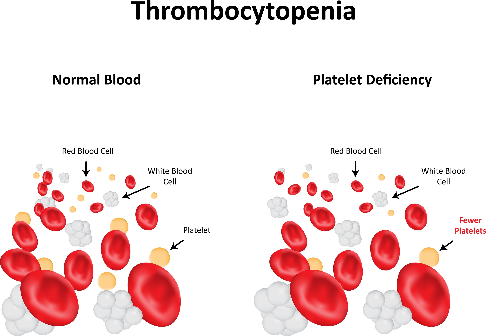

Thrombocytopenia

SYMPTOMS:
- Bleeding, most often from the gums or nose. Women with thrombocytopenia may have heavier or longer periods
-
Red, flat spots on your skin, about the size of a pinhead. You see these mostly on your legs and feet, and they may appear in clumps. Your doctor may call them petechiae.
-
Blotches and bruises. You might have large areas of bleeding under the skin that don't turn white when you press on them.
CAUSES:
- Thrombocytopenia has many causes. One of the most common causes of low platelets is a condition called immune thrombocytopenia (ITP). You may hear it called by its old name, idiopathic thrombocytopenic purpura. Although doctors don't know what causes primary ITP, they know that it happens when your immune system -- your body's main defense against disease -- doesn't work right. Your antibodies, which are supposed to attack infections, instead mistakenly destroy your platelets.